本文为2016年bctf中LostFlower的writeup。
LostFlower writeup
首先点我下载题目。直接使用jeb反编译，入口代码如下：
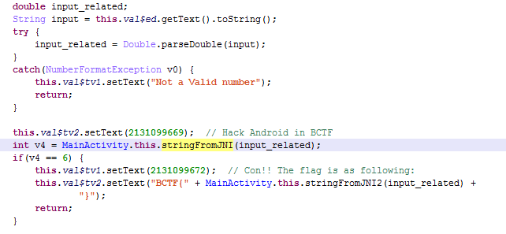
首先获取用户输入，然后调用Double.parseDouble将其转为Double类型（输入数据必须为合法的Double数据），接着将其作为参数传递给native层的stringFromJNI。如果返回值为6，则调用stringFromJNI2，返回值即为flag。
使用IDA反汇编查看stringFromJNI，结果如下：
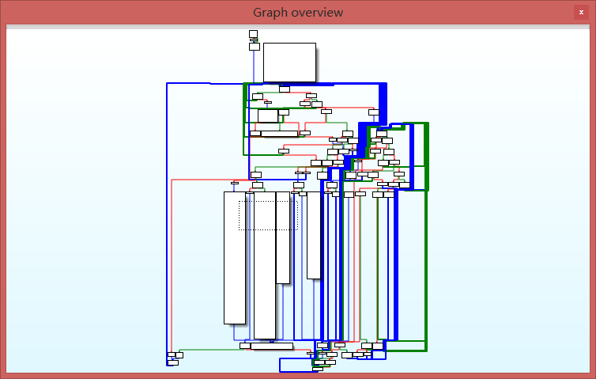
可以看到，SO进行了高强度的混淆，加入了大量while、if等无用指令。
对stringFromJNI使用f5，经过对f5伪代码的分析，并没有发现对用户输入进行校验的地方。静态分析解决不了问题，就用动态调试。
SO没有做任何反调试处理，但是动态调试时，stringFromJNI的f5失效，需要手动处理。遇到问题如下：
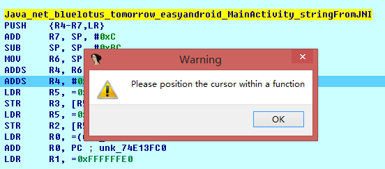
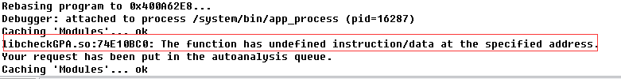
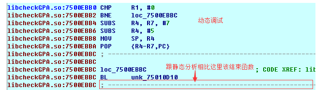
通过对比动态调试和静态分析的汇编代码可知，动态调试时stringFromJNI没有结束地址，故f5失效。解决方法：用鼠标从函数头部一直到函数结尾拖一下，变成灰色，然后按p，这样就可以f5。
由于汇编代码含有大量的无效跳转，因此我们选择直接在伪代码的基础上进行动态调试，把精力放在函数对输入数据进行的处理上。同时，输入多组不同的数据来了解函数处理流程。
首先对输入数据进行处理的地方是check1，根据返回值是否为1，进入不同的分支。
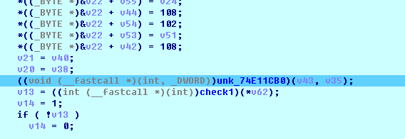
分析check1，对check1进行f5得到伪代码（check1也是要手动处理才能得到伪代码）。继续调试，来到关键位置，结果如下：
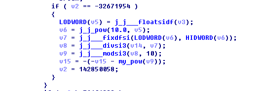
这里的函数都是一些除法、求余的操作。经过几轮动态调试，这个for循环的前五行代码就是逆向取出输入数据的每一位。举个例子，输入为1234567890，每轮得到的依次是0，9，8，7，6，5，4，3，2，1。
现在还剩下一个my_pow，顾名思义这是个幂相关的函数。注意我们不需要去具体分析my_pow,因为我们的输入只有0-9这10种可能。几轮测试过后，得到结论：my_pow返回输入数据的十次幂。
继续调试，来到下一个关键位置：每从输入数据中取一位，v3值加1，这里猜测输入数据应该是10位，即输入数据应大于1000000000。
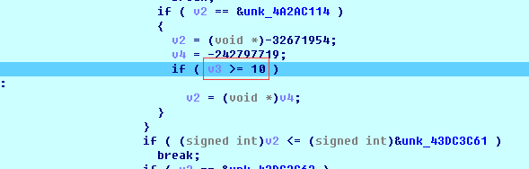
重新运行程序（新的输入数据大于1000000000），调试到上图位置时强制跳转到v2 = (void *)v4;，继续调试，进入下图所示的分支。
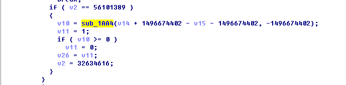
需要弄清楚sub_1AA4，v14是输入数据，v15是输入数据每一位十次幂的求和，通过分析可知sub_1AA4需返回负数。
sub_1AA4逻辑：如果参数（v14 - v15）为非负数则返回该参数，如果参数为负数则取反后返回。
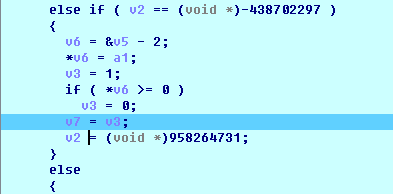
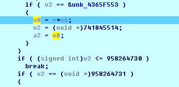
这里遇到一个问题，由上面分析可知，需要sub_1AA4返回负数。但是按照函数逻辑，无论如何都会返回一个非负数。这时看伪代码已经没用了，通过对sub_1AA4的汇编代码的分析，发现了溢出点：NEGS R1, R1。当参数为负数时，程序使用NEGS指令求二进制补码后返回。参数取-2147483648（2^31）时，取其二进制补码发生溢出，参数仍为负数。
最后给出计算输入的程序：
|
|
输入为1422445956，Flag为BCTF{wrhav3f4nwxo}。